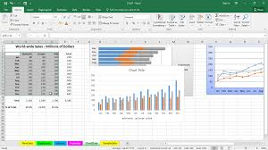

Heike Hofmann

Two Excel spreadsheets are available for our lab today: FileOne and FileTwo.
The big goal for this lab is to come up with a single data set consisting of (type of) measure, semester, student id, student demographics, and pre- and post-test score.
The lab report is supposed to document all steps you take from reading the data out of the Excel spread sheets to checking data quality to the final data.
Document in the report
library(tidyverse)## Warning: package 'tidyverse' was built under R version 3.3.2## Warning: package 'ggplot2' was built under R version 3.3.2readxl::excel_sheets("Spreadsheets/FileOne.xlsx")## [1] "Sem1" "Sem2" "Sem3" "Sem4"readxl::read_excel("Spreadsheets/FileOne.xlsx", sheet=1) %>% glimpse()## Observations: 94
## Variables: 18
## $ <dbl> 1, 2, 3, 4, 8, 12, 13, 14, 16, 17, 18, 19, ...
## $ <chr> "Pre", "Pre", "Pre", "Pre", "Pre", "Pre", "...
## $ Answer 1 <dbl> 7, 9, 8, 10, 8, 7, 9, 2, 7, 5, 5, 8, 8, 10,...
## $ Answer 2 <dbl> 5, 3, 3, 2, 3, 7, 5, 2, 9, 4, 4, 7, 1, 3, 4...
## $ Answer 3 <dbl> 5, 2, 7, 6, 6, 9, 4, 2, 8, 7, 4, 10, 3, 10,...
## $ Answer 4 <dbl> 5, 8, 5, 10, 8, 8, 9, 3, 5, 3, 6, 10, 8, 10...
## $ Answer 5 <dbl> 7, 10, 7, 8, 5, 3, 8, 2, 8, 7, 4, 8, 7, 10,...
## $ Answer 6 <dbl> 5, 6, 3, 7, 6, 9, 9, 6, 8, 4, 6, 6, 6, 8, 4...
## $ Answer 7 <dbl> 3, 8, 5, 6, 1, 2, 7, 1, 3, 4, 1, 4, 3, 7, 3...
## $ Answer 8 <dbl> 7, 5, 7, 10, 6, 8, 9, 1, 8, 5, 6, 7, 8, 8, ...
## $ Answer 9 <dbl> 5, 10, 7, 9, 6, 5, 8, 1, 5, 4, 5, 7, 8, 9, ...
## $ Answer 10 <dbl> 8, 2, 5, 10, 1, 6, 3, 1, 3, 9, 9, 6, 2, 10,...
## $ Total <dbl> 57, 63, 57, 78, 50, 64, 71, 21, 64, 52, 50,...
## $ Normalized Changes <dbl> 0.18604651, 0.08108108, 0.20930233, -0.0256...
## $ GENDER <chr> "Female", "Female", "Male", "Female", "Fema...
## $ Characteristic <chr> "No", "Yes", "Yes", "Yes", "No", "No", "No"...
## $ Treatment Part 1 <chr> "R", "R", "R", "R", "R", "R", "R", "R", "R"...
## $ Treatment Part 2 <chr> "No LP", "No LP", "No LP", "No LP", "No LP"...Submit a write-up containing code, plots, and descriptions in form of an RMarkdown file to Blackboard.